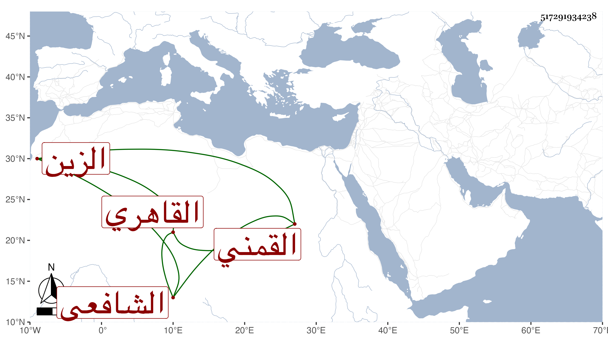

0902Sakhawi.DawLamic.ITO20230111-ara1.EIS1600.517291934238
Biography ID: 517291934238
660
عبد الغني بن محمد بن أبي العباس أحمد بن عبد العزيز الزين القمني ثم القاهري الشافعي . ولد في ثاني صفر سنة اثنتين وثمانين وسبعمائة وحفظ القرآن والعمدة والتنبيه وألفية النحو ، وعرض في سنة ست وتسعين فما بعدها على الابناسي وابن الملقن والكمال الدميري والزين القمني وأجازوه ، وكتب له الدميري سنده بالعمدة والألفية ، واشتغل يسيرا وأخذ عن الزين القمني والبرماوي والولي العراقي في آخرين ولازم شيخنا في الأمالي وغيرها وكتب عنه فتح الباري ، وتكسب بالشهادة دهرا وصاهر شيخنا الرشيدي على ابنته آمنة وكان خيرا سمع بقراءتي على شيخنا وأجاز لي . مات سنة سبع وستين رحمه الله وإيانا .
